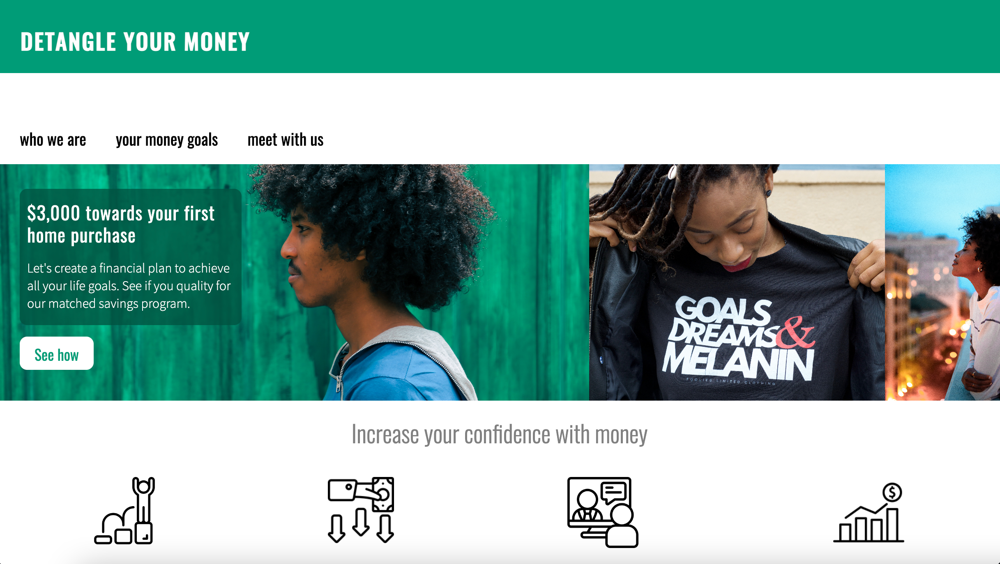

Projects

Animal Trading Card
Languages: HTML, CSS
Challenge : Assess my ability at utilizing proper CSS styling (margins, padding, borders, font styling, etc.)

Website for a financial coaching service
Languages: HTML, CSS
Challenge: Practice UI design, content design, and making websites responsive for mobile screens